Exemplos de trotes por ODS
- Disponibilizar para a comunidade local ofertas de trabalho.
- Disponibilizar serviços para a comunidade (saúde, documentos, previdência, bolsa-família etc.).
- Realizar cursos de capacitação profissional e geração de renda.
- Promover capacitações em organizações sociais e escolas públicas sobre a estruturação de cooperativas.
- Realizar campanhas para arrecadar alimentos, livros e roupas.
Para saber mais sobre o ODS #1, clique aqui.
- Realizar visitas à comunidade e em escolas, orientando sobre o que é uma boa alimentação.
- Trabalhar junto a organizações sociais e famílias, mostrando como aproveitar melhor os alimentos, evitando desperdícios.
- Participar de programas de apoio à merenda escolar, incentivando a criação de hortas comunitárias e pomares.
Para saber mais sobre o ODS #2, clique aqui.
- Participar de programas de apoio à promoção de exercícios físicos em todas as idades.
- Realizar ações de conscientização e prevenção ao consumo excessivo de álcool e tabaco.
- Promover palestras e atividades sobre temas relacionados à saúde materna e infantil, como planejamento familiar, gravidez de risco, importância dos exames pré-natais e das vacinações do bebê, nutrição da mãe e do bebê, aleitamento materno, cuidado infantil e prevenção de acidentes domésticos.
- Realizar orientação sobre os locais que prestam atendimento de saúde à mulher.
- Mobilizar e informar sobre o combate à AIDS e outras doenças epidêmicas (malária, dengue, tuberculose, febre amarela) na universidade ou na comunidade.
- Informar sobre saúde sexual e reprodutiva para jovens e adultos e prevenção a doenças sexualmente transmissíveis em organizações sociais e escolas públicas.
- Promover palestras em escolas e organizações sociais sobre cuidados com a saúde física e mental, higiene e importância das vacinas.
- Fazer levantamento dos serviços de saúde disponíveis, como remédios, postos de saúde, centros de atendimento, e divulgá-los na comunidade.
Para saber mais sobre o ODS #3, clique aqui.
- Formar um grupo de voluntários para atuar junto às escolas públicas no reforço escolar, de acordo com as necessidades da escola.
- Realizar pesquisas junto às escolas públicas para identificar os alunos que estão faltando muito às aulas e traçar uma estratégia para incentivá-los a voltar a frequentar a escola.
- Organizar bibliotecas, videotecas ou brinquedotecas na comunidade, em escolas ou organizações sociais.
- Fazer um levantamento dos analfabetos de um bairro e incentivá-los a frequentar um curso de alfabetização.
- Organizar atividades recreativas e esportivas, que também são educativas. Disciplina, respeito e cooperação podem ser reforçados nesses momentos.
- É possível utilizar metodologias como a EaD para formar grupos de estudos com pessoas que não tenham concluído o ensino fundamental ou médio.
- Realizar oficinas de produção textual, concursos de redação e outras atividades de estímulo à leitura em escolas próximas da faculdade.
- Promover cursos, palestras e ciclos de debate sobre temas culturais.
Para saber mais sobre o ODS #4, clique aqui.
- Identificar e divulgar novas oportunidades de trabalho para mulheres em atividades consideradas masculinas.
- Promover ações na comunidade e em organizações sociais que estimulem as mulheres a buscar alternativas de geração de renda.
- Divulgar na universidade e na comunidade que existem, nas grandes cidades, centros de atendimento para mulheres, onde elas podem denunciar a violência doméstica e terem acompanhamento físico e psicológico.
- Promover palestras sobre empreendedorismo e trabalho cooperativo para grupos de mulheres.
Para saber mais sobre o ODS #5, clique aqui.
- Desenvolver material explicativo, palestras e campanhas sobre o consumo consciente e racional de água.
- Criar eventos, como gincanas e corridas, a fim de conscientizar sobre a importância do consumo consciente e do desenvolvimento sustentável para uma melhor qualidade de vida. Aproveitar o momento para organizar rodas de conversa ou pequenas palestras sobre o tema.
Para saber mais sobre o ODS #6, clique aqui.
- Desenvolver material explicativo, palestras e campanhas sobre o consumo consciente e o uso racional de energia.
- Implantar sistemas que incentivem o uso de recursos limpos e renováveis, por exemplo de aquecimento solar e captação da água da chuva.
- Conscientizar sobre o uso de combustíveis fósseis, promovendo campanhas para o uso da bicicleta, por exemplo.
Para saber mais sobre o ODS #7, clique aqui.
- Desenvolver material explicativo, palestras e campanhas sobre empreendedorismo e gestão de finanças.
- Disponibilizar para a comunidade local ofertas de trabalho.
- Promover orientações para micro e pequenos empresários da comunidade acerca de gestão de negócios e formalização da empresa.
Para saber mais sobre o ODS #8, clique aqui.
- Arrecadar materiais por meio de parcerias e reformar uma escola ou espaço da comunidade, por exemplo fazendo pintura, jardinagem etc.
- Promover eventos e palestras para divulgar ideias e práticas inovadoras da comunidade (startups, trabalhos científicos etc.).
- Promover um hackathon*, criando soluções para um problema da comunidade.
* Evento que reúne programadores, designers e outros profissionais ligados ao desenvolvimento de software em maratonas de trabalho com o objetivo de criar soluções específicas para um desafio pré-definido.
Para saber mais sobre o ODS #9, clique aqui.
- Promover ações para tornar espaços e serviços da comunidade acessíveis a pessoas com deficiência ou mobilidade reduzida.
- Organizar aulas de português para refugiados e promover eventos para integrá-los à comunidade.
- Promover uma feira cultural com representantes de vários povos e religiões, buscando quebrar preconceitos (por exemplo, em relação a religiões afro-brasileiras).
Para saber mais sobre o ODS #10, clique aqui.
- Arrecadar materiais por meio de parcerias e reformar moradias precárias da comunidade.
- Promover eventos e palestras de educação para o trânsito, visando diminuir acidentes e conscientizar as pessoas quanto à importância do transporte compartilhado.
- Realizar ações de divulgação e preservação de patrimônios culturais e naturais da comunidade.
- Realizar mutirões de limpeza, plantação de árvores e flores em praças do bairro.
Para saber mais sobre o ODS #11, clique aqui.
- Promover uma campanha de descarte correto de materiais eletroeletrônicos e de informática.
- Desenvolver material explicativo, palestras e campanhas sobre o consumo consciente e a pegada ecológica.
- Implementar a coleta seletiva na faculdade, doando o que for arrecadado para reciclagem.
- Realizar um bazar solidário com troca de roupas, livros e objetos, conscientizando as pessoas sobre consumo sustentável.
- Organizar oficinas de artesanato com materiais recicláveis.
Para saber mais sobre o ODS #12, clique aqui.
- Promover campanhas de incentivo ao transporte público ou privado não poluente (como a bicicleta).
- Desenvolver material explicativo, palestras e campanhas sobre o consumo consciente e a pegada ecológica.
- Implementar a coleta seletiva na faculdade, doando o que for arrecadado para reciclagem.
- Promover campanhas de conscientização quanto ao uso de plástico, sugerindo alternativas eficientes.
- Divulgar a campanha “segunda sem carne”, explicando o impacto da pecuária para o meio ambiente e o planeta.
- Presentear os calouros com canecas reutilizáveis, visando reduzir o uso de copos descartáveis.
Para saber mais sobre o ODS #13, clique aqui.
- Mutirão de limpeza na praia.
- Coleta e triagem de resíduos encontrados na mata. Voluntariado em reservas e organizações dedicadas à preservação dos ecossistemas.
- Promover campanhas de conscientização quanto ao uso de plástico e seu impacto para o oceano, sugerindo alternativas eficientes.
- Promover campanhas, eventos e palestras de educação ambiental.
- Alguns zoológicos realizam ações importantes de educação ambiental e preservação. Se for o caso do zoo de sua cidade, é interessante divulgar esse trabalho para a comunidade.
Para saber mais sobre o ODS #14, clique aqui.
Sobre o ODS #15, clique aqui.
- Promover campanhas, eventos e materiais sobre a importância da democracia, do voto consciente e da fiscalização permanente dos representantes eleitos.
- Organizar uma consultoria jurídica para a comunidade, orientando as pessoas sobre questões como pensão alimentícia, divórcio e direitos do trabalhador e do consumidor.
- Organizar campanhas e programas de valorização da vida e defesa de direitos.
Para saber mais sobre o ODS #16, clique aqui.
- Mobilizar outros universitários para que participem desse movimento.
- Realizar palestras de incentivo ao voluntariado na própria faculdade, em escolas e comunidade.
- Buscar parcerias com outras instituições, comércios e empresas da região, de modo a viabilizar as ações planejadas e promover a colaboração.
Para saber mais sobre o ODS #17, clique aqui.